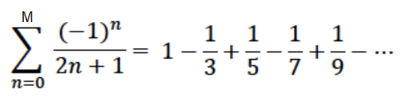

Madhava-Leibniz Series
An example alternating series is shown below.

Task 1 : Write the function that takes parameter M and returns the result of the series.
Task 2 : Read the M values from the file named "pi_est_series.txt" (stored in file_name variable). Run the function for x times using the next value of M each time and calculate the average result.
M is a positive integer.
n >= 0 and it is an integer
x is a positive integer.
Warning: You are not allowed to use any imports.
| pi_est_series.txt |
| 2 |
| 3 |
| 5 |
| 7 |
| 9 |
| INPUTS | OUTPUTS |
|
pi_est_series.txt 3 |
0.8666666666666667 0.7238095238095239 0.7440115440115441 0.7781625781625783 |
|
pi_est_series.txt 5 |
0.8666666666666667 0.7238095238095239 0.7440115440115441 0.7542679542679545 0.7604599047323508 0.769843118697608 |